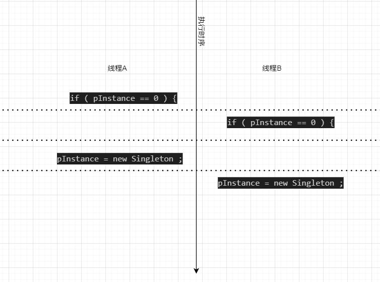

本笔记的目的是,了解单例模式中为什么要使用DCLP方法,以及验证DCLP是否为线程安全
//单例类的声明
class Singleton {
public :
static Singleton * instance ( ) ;
. . .
private :
static Singleton * pInstance ;
};
//单例类的部分实现
Singleton * Singleton :: pInstance = 0 ;
Singleton * Singleton :: instance()
{
if ( pInstance == 0 ) {
pInstance = new Singleton ;
}
return pInstance ;
}
如上代码所示,在单线程中会执行的不错,但是在多线程中则会出现问题,当两个线程中开始执行上面的代码时,会容易出现两个线程中pInstance变量指向地址不同的问题(其实是创建了两个实例对象),进而没有实现单例模式。
当两个线程的执行时序按照下图所示执行,就会出现问题,此时会创建两个实例对象

假设线程A进入instance()函数,执行pInstance == 0,此时线程被挂起(suspended)。在A被挂起时,它刚判断出pInstance是空值,也就是说Singleton的对象还未被创建。
现在线程B开始运行,线程B也判断出pInstance为空,因此它继续执行pInstance = new Singleton,创建出一个Singleton对象,并将pInstance指向该对象,然后把pInstance返回给instance()函数的调用者。
之后的某一时刻,线程A恢复执行,它接着做的第一件事就是执行pInstance = new Singleton创建出另一个Singleton对象,并让pInstance指向新对象。
所以代码需要进行改进来实现线程安全,最先想到的方法就是互斥加锁,如下代码所示
Singleton * Singleton :: instance() {
//加锁（为了简便起见,代码中忽略了加锁所需要的参数）
Lock lock ;
if ( pInstance == 0 ) {
pInstance = new Singleton ;
}
return pInstance ;
}//解锁(通过Lock的析构函数实现)
上述代码使用互斥量将整个函数都锁住,确实是实现了线程安全,但缺点在于导致资源消耗太高 : 每次访问该函数都需要进行一次加锁操作。实际上,我们只有在pInstance初始化时需要加锁。也就是说加锁操作只有instance()函数第一次被调用时才是必要的(因为要创建实例对象),后续再执行instance()时的锁操作都是没必要的。
为了减少使用锁操作,减少资源消耗,大神们又设计出了DCLP(双重检查锁定模式),来解决冗余加锁的问题。代码如下所示
Singleton * Singleton :: instance ( ) {
//通过新增加的判断来减少加锁操作
if ( pInstance == 0 ) {
//原本的写法
Lock lock ; //加锁操作
if ( pInstance == 0 ) {
pInstance = new Singleton ;
}
}
return pInstance ;
}
DCLP测试完整代码
文章中也是提到了DLCP不安全的原因,问题在于下面红字代码,文中解释这一句代码的执行步骤为三步(1)为Singleton对象分配内存 (2)在已分配内存空间中构造Singleton对象 (3)将pInstance指向这片内存区
由于编译器的优化,导致步骤2和步骤3是不确定的,那么会出现下面问题,B线程会返回一个NULL指针
| 语句顺序 | 线程A | 线程B |
| 1 | if (pInstance == NULL) => true | |
| 2 | Lock lock | |
| 3 | if (pInstance == NULL) => true | |
| 4 | step 1,分配内存 | |
| 5 | step 2,给pInstance赋值(此步骤和第三步颠倒了) | |
| 6 | if (pInstance == NULL) => false | |
| 7 | return pInstance(此时尚未构造对象) | |
| 8 | step 3,构造对象 | |
| 9 | return pInstance |
Singleton * Singleton :: instance ( ) {
//通过新增加的判断来减少加锁操作
if ( pInstance == 0 ) {
//原本的写法
Lock lock ; //加锁操作
if ( pInstance == 0 ) {
pInstance = new Singleton;
}
}
return pInstance ;
}
也许最后有方法解决DCLP的线程安全,但我也没有看懂